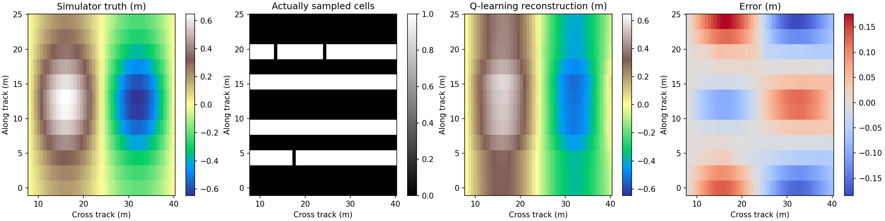
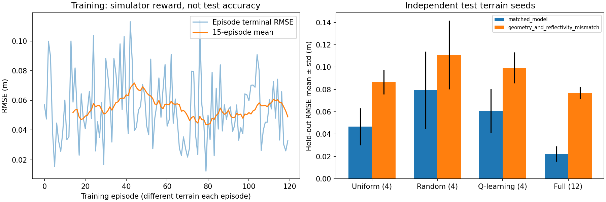

侧扫声呐地形重建：模拟采集与强化学习采样实验¶
这里实现完整闭环：生成带真值的地形 → 模拟声呐回波 → 策略选择采样位置 → 调用现有物理重建器 → 用真值计算误差和奖励 → 更新采样策略。
采用 NumPy 表格 Q-learning，无神经网络、无 GPU、无新训练依赖。Q 表是 4096 × 12 个 float32，未压缩约 192 KiB。默认完整实验约 19 秒（当前云 CPU；包含画图），而不是训练大模型。
工作范围与代码入口¶
本案例从实际代码和已保存的实验结果出发，说明如何构造一个可以评估误差的声呐重建闭环。已完成的工作包括相对地形物理重建器、真实 XTF 样本读取、模拟声呐采集环境、轻量采样策略学习及独立测试。这里主要讨论可取得地形真值的模拟实验。
| 内容 | 代码与数据 |
|---|---|
| 项目总说明 | sonar_terrain/README.md |
| 物理重建器与基础推导 | reconstruct.py |
| 模拟环境与 Q-learning | simulation/experiment.py |
| 完整测试指标 | metrics.json |
| 原始 XTF 数据与实测探索预览 | 原始数据说明 |
已生成的结果¶


以下为 12 个未参与训练的地形上的 RMSE 均值，单位 m：
| 采样策略 | 每场景采样次数 | 同散射模型，含噪声与缺测 | 几何与反射率存在偏差 |
|---|---|---|---|
| 均匀采样 | 4 | 0.04677 | 0.08672 |
| 随机采样 | 4 | 0.07942 | 0.11103 |
| Q-learning | 4 | 0.06082 | 0.09954 |
| 全部采样 | 12 | 0.02221 | 0.07702 |
本次 Q-learning 优于随机，但没有超过均匀采样。 120 个训练场景、有限的覆盖状态和简单的地形分布，并未显示强化学习优于规则策略。保留负面比较结果，不用测试集继续挑选训练参数。全采样用三倍预算，仅作为数据充分时的参考，不能当作等成本竞争方法。
各场景的 RMSE、均值、标准差，以及 MAE、逐场景最大绝对误差的均值均记录在 results/metrics.json。误差覆盖整个模型网格，包含未采样区域；不是只评价观测点。图中误差棒为不同地形之间的标准差，不是置信区间。这里只运行一个训练随机种子、12 个测试地形，不能据此给出统计显著性结论。
运行方法¶
在仓库根目录执行，依赖与原重建器相同：
| Bash | |
|---|---|
在只读主目录环境，可在实验命令前加 MPLCONFIGDIR=/tmp/sonar-mpl。所有训练/测试数据由本地模拟器生成，不需要联网下载。默认测试命令会跳过缺少可选 pyxtf 时的原始文件测试，模拟测试不依赖 pyxtf。
回波到地形的物理关系¶
设声呐距离参考平面的高度为 ，横向距离为 ，高程为 ，横向坡度为 。先假定地形起伏相对于高度较小，采用参考平面射线方向，并忽略沿航迹坡度对散射法向的影响。
单位法向与朝向声呐的单位向量为：
假定传播损耗已校正，已知增益 和等效反射率 ，余弦散射模型为：
令 、，可写成 。选择与平坦海底连续的分支：
余弦反演存在分支歧义。代码限制坡度、排除近天底转折区，并过滤非有限、非正、饱和或超出模型范围的强度。不能对任意声呐 JPEG 直接套用这个公式。
得到观测坡度后，对整个网格求解带平滑约束的最小二乘问题：
只保留有效观测边， 使用实际坐标间距构造差分， 是输入边界高程。模拟实验将最近天底边界设为零，与模拟真值一致；这是一项已知条件，不是重建器从强度中恢复出来的绝对深度。
未采样区域通过平滑约束补全，因此采样位置会影响全图重建误差，这正是采样策略可以优化的对象。
误差指标与评估范围¶
对固定全网格的 个单元计算：
RMSE 对较大的局部误差更敏感，MAE 表示平均绝对偏差；最大绝对误差用于检查最差位置。先分别计算每个独立地形的指标，再对 12 个测试地形求均值。所有策略采用相同的评估范围，不能只选观测点或误差较小的区域。
模拟采集环境¶
- 网格：12 个沿航迹位置 × 48 个横向距离单元，x 为 8～40 m，y 为 0～24 m。
- 场景：横向正弦起伏乘以沿航迹包络；不同随机种子改变振幅、包络中心、宽度和相位。近天底边界始终为零，与重建器的默认锚点一致。
- 元数据：已知模拟高度和增益；这些不是由强度自动估出来的。
- 观测：余弦散射模型、标准差 0.0015 的强度噪声、约 1% 缺测。
- 每个动作选择一个尚未测量的沿航迹位置，返回该行的 48 个强度采样。
- 未采样单元在观测中为 NaN，掩码为 False；策略不能直接看到完整回波或地形真值。
- 每次采集之后，用
reconstruct.py中同一个稀疏重建器重建整个地形。
模拟器是小型、准静态的采样位置选择环境，没有船体动力学、航速/转弯约束、采集时间、多路径、完整传播模型或声学射线追踪。允许跳跃选择位置；每个动作固定成本，不计算航行距离，因此这里不能解释成可部署的最优测线规划。
强化学习的定义¶
状态：已采集位置的 12 位覆盖掩码，最多 4096 种。观测接口另返回已采集强度、有效掩码和剩余预算；当前 Q 表刻意只使用覆盖状态，所以学到的是采样顺序/布局，不是根据回波自适应的复杂策略。
动作：选择 0～11 中的一个未采集位置，已采集位置从候选动作中屏蔽。重复动作或预算耗尽后的动作会报错。
奖励：
每个 episode 采集 4 次。折扣因子为 1，所以累计奖励等于“初始 RMSE 减去最终 RMSE，再减去总采集成本”。开始时使用全零地形作为未观测基线。
更新方式：
终止状态的未来价值为 0。训练采用 ε-greedy，ε 从 0.8 线性降至 0.1；测试 ε=0，只在并列最佳动作时随机打破平局。环境由隐藏地形决定，覆盖状态不包含完整环境，因此该简单表示不保证满足完整可观测的 Markov 假设，不承诺最优性或收敛。
模拟真值仅供训练奖励和离线误差评估使用，策略输入没有 RMSE 或真值。真实声呐通常无法在线获得这种奖励；若要应用到实测，必须解决仿真到真实的迁移及奖励代理问题。
防止把合成精度当作真实精度¶
- 训练地形种子：1000～1119；测试地形种子：10000～10011，互不重叠。
- 三种同成本策略在测试时使用相同场景、相同回波噪声和相同缺测。
- 训练只用参考平面余弦模型。
- 第二种测试故意让前向过程采用真实起伏后的射线方向、沿航迹法向，以及未知的 3% 横向反射率调制；反演仍使用原近似模型。
- 两种测试都是模拟实验。模型不匹配测试也不能替代海试或配对多波束真值。
- 相对高程以已知的模拟零边界为基准；没有恢复海平面绝对水深。
输出文件¶
| 文件 | 内容 |
|---|---|
policy.npz |
训练得到的 Q 表 |
metrics.json |
独立测试的全部误差与实验配置 |
training.json |
各训练场景的初始/最终 RMSE 和累计奖励 |
example_traces.json |
每种方法在首个测试地形中的动作、逐步误差和奖励 |
example.npz |
首个测试场景的真值、实际采样、重建及元数据 |
reconstruction.png |
真值、采集掩码、Q-learning 重建、误差图 |
evaluation.png |
训练过程和测试对比 |
下一步若要改善策略，应先扩大训练分布并加入可由实际回波提取的状态特征，再使用新的独立测试集评价，不能仅增加模型大小或反复调同一批测试结果。
实验结论¶
在本次小规模测试中，均匀采样是同预算下更好的基线。Q-learning 已实现有效的采样—奖励反馈，但仅有覆盖状态，不能依据当前回波判断哪里需要补测。完整采样仍存在误差，说明重建模型、噪声和正则化本身也限制精度；几何与反射率不匹配时，增加采样不能消除系统偏差。
这些结论适用于此模拟器和固定实验配置，尚不能推广为真实海底重建精度。实测 XTF 预览使用经验辐射校正，没有配对测深真值，其结果不能与本节的合成 RMSE 混用。